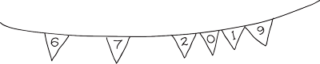
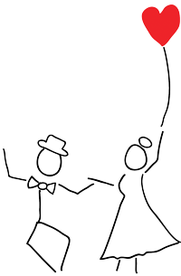

We are getting married
and we'd love you to join us!
Ideme sa brať a boli by sme veľmi radi, ak by ste pri tom boli s nami!
6.7.2019 - CARDIFF
2.00pm - Ceremony
at St Mary of the Angels Church, Cardiff, Wales
(Click here for live stream!)
Followed by a small garden party, hog roast and dancing at St. Catherine's Church Hall (a short walk down the road from the ceremony)
As lots of friends and family will still be around on Sunday July 7th, we invite anyone who wants to join us for a picnic in Bute Park (Cardiff) from around midday.
14.00 - SOBÁŠ
v St Mary of the Angels Church, Cardiff, Wales
(Klikni tu ak chceš pozerať priamy prenos!)
s následnou malou záhradnou párty, pečeným prasiatkom a tancom v St Catherine's Hall
A ak počasie dovolí, v nedeľu 7 Júl 2019 by sme piknikovali v poblízkej pláži. Podrobnejšie informácie na nedeľu poskytneme neskôr.
17.8.2019 - Lúčka
13.00 - Sv omša s požehnaním
nášho manželstva v kostole Sv Anny v Lúčke
a posvadobnej oslave v kultúrnom dome v Lúčke
1.00pm - Service of Blessing
at St Anne's Church, Lúčka, Sabinov, Slovakia
followed by a post-wedding reception and party, with plenty of food and drinks to keep everyone going until the small hours